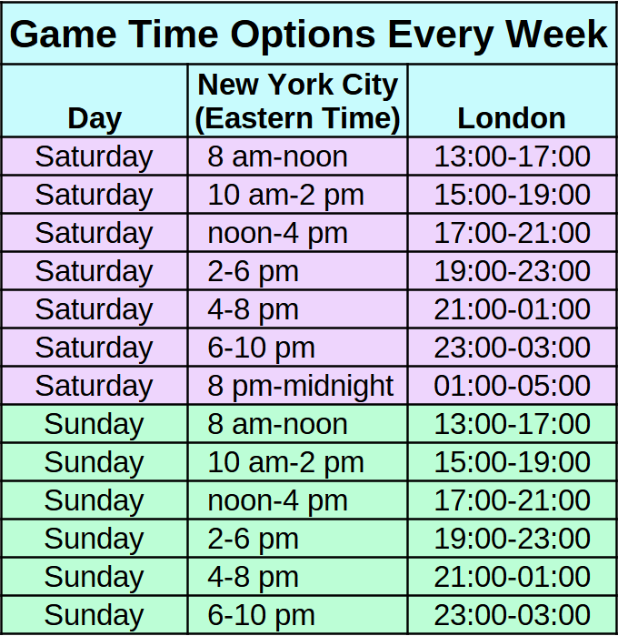
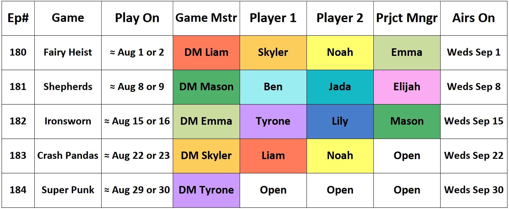
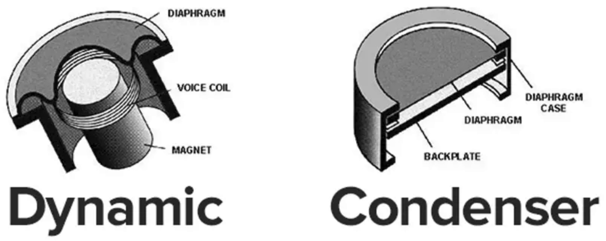

Welcome to the official website of Firebreathing Kittens Podcast! The following answers some questions frequently asked by new members. It is divided into sections to make it easier to look at.
Table of Contents
- Podcast Name
- Theme
- How Long We Have Been Playing
- How do you “play”? (Roll20, Foundry, etc?)
- TTRPG Systems
- Game Playtime Length
- Scheduling
- Example Game Calendar
- Our Members Are Welcome to GM
- Flavor vs Mechanics
- Standalone Plot and Long Form Storytelling
- Examples of How We Use Each Others' Non Player Characters
- Player-Character Level Progression
- Safety System
- NSFW (or SFW)
- Accents
- Improvisational Comedy (Improv)
- How Long Do I Have to Decide If I Want To Play?
- Duration
- Equipment
- How to Join
1. Podcast Name
Our podcast is called Firebreathing Kittens. The show is available on iTunes, Spotify, Overcast, Google Podcasts, Youtube, etc. Here are some links where you can listen to it:
- iTunes: https://podcasts.apple.com/us/podcast/firebreathing-kittens/id1459051634
- Spotify: https://open.spotify.com/show/66MmjNj2yWKSgNUORLJIek
- YouTube: https://www.youtube.com/channel/UCRZWt_mfV6I0AM4W7U9WtAg/videos
2. Theme
Friendship. The theme of Firebreathing Kittens is friendship, but more specifically 仲間, なかま , that feeling you get from knowing your coworkers have your back. The antithesis of Firebreathing Kittens would be the members preying upon one another, betraying one another, or not supporting one another.
If we’re laughing together on our show, then we’re doing it right. The main idea behind Firebreathing Kittens is that it’s all about hanging out with friends. If you’ve ever been watching the anime “Fairy Tail” and thought to yourself: “I wish I had friends who supported each other like that”, well, we thought that too, so we made it happen.
3. How Long We Have Been Playing
Firebreathing Kittens has more than 200 episodes. We have been playing together for several years.
4. How do you “play”? (Roll 20, Foundry, etc visual combat maps?):
Our GMs use words to communicate the battle map they are looking at to their players. The players are welcome to sketch a battle map in front of them, use their own miniature figures on their desks, etc, based on what they hear. We use spoken words to describe what the characters are doing, the setting, the combat, everything. We’re a podcast so if the information is not communicated using words, the listener wouldn’t be able to hear it.
5. TTRPG Systems
We play the systems you've always wanted to try. We play a variety of tabletop roleplaying games (TTRPGs) that are free for our members either because they are free to everyone, or because the creator sent us copies. The calendar is opt-in. Our members see a system they’d like to try a few weeks in the future, make a character sheet for their character formatted for the system, and send that character sheet to the organizer to join that game as a player. Example: You will see a calendar with four weeks showing with four different people GMing four different systems. You pick which ones you join. It could be zero, it could be all four, it's your choice.
For example, Crash Pandas is a quick to learn one page game about street racing raccoons. What if the party got shrunk raccoon sized and then had to race a car? Suddenly, you're too small to reach both the steering wheel and the gas pedal, so your friend does one and you do the other. Could you win a race with everyone in the party simultaneously making a choice each round like left or right, gas pedal or break, without crashing into too many obstacles? Then another session we might be playing the game Ikrala, a thirty page rule book where the party gets lost inside Ikea after the store closes and some of the furniture are mimics. Another session, we might be playing Everything's Going To Crab, a fifteen page rule book where the goal is to convince NPCs to turn into crabs temporarily to survive a foretold tsunami. Our members make one character for the year long campaign and adapt our same character to each ttrpg rule system. The characters are roleplayed so they can't tell their players are rolling different dice each week. For them, it's one continuous campaign.
Here are some example TTRPGs we have played in the past:
- The one page rpg Lasers and Feelings in the episode “So Then I Started Blasting”
- A distance combat rpg D6 Feet Under in the episode “A Storm, A Ship, And A One Way Trip”
- A Powered by the Apocalypse rpg that mechanically rewards emotionally bonding with other people, Shepherds, in the episode “Deli Of The Beast”
- Crash pandas, an rpg about illegal street racing raccoons in the episode “Trickamui Drift”
- Winner of the ENNIE award for best free rpg of 2019, Irownsworn, in “Sworn To Be Wild”
- et cetera. The words in parentheses in the titles of past episodes are the TTRPG we played that session. When you GM, you can pick your choice of TTRPG.
6. Game Playtime Length
We spend four hours recording. The published episode is about three hours long. The episode is a bit shorter than the recorded time because we edit it.
7. Scheduling
Frequency: You don’t have to commit to playing every weekend. You choose how often you play. A lot of our members play every other week, some play once a month, and a few of us play once every other month. It’s a rotation where everyone can get on the calendar.
Seasonal availability: Seasonal availability is not a problem with our format. It’s okay if you need to be gone for a few months in the summer or winter, etc.
Signup calendar: Our members can see a big signup calendar at the top of the page we use to organize games. The group organizer updates the calendar with new open spots weekly. Members comment on the calendar to join an open spot. You pick which weeks you play, and you can see who’s in the game you’re joining.
Game times: We usually end up playing on the weekend. We use a doodle-poll-like scheduling system. One week before the game, we make a list of more than a dozen possible game times. The three players and the GM who signed up to play on the calendar are asked to click yes on every time on the poll that they are available. The first person clicks on all the times they are available. The second person does, too, and the third, and the fourth.
When the four people are done, there’s basically always an overlapping window that works for everyone, without us having to set a recurring blocked off blackout period. We flexibly start at a different time each week, at one of the poll options that all four people are available.
Example:
Person 1: Are you available this Saturday from 10-2? 4-8? 6-10?
Person 2: the second two.
Person 3: the first and last times.
Voila! Time three works for everyone. The more options, the more likely it is that there’s a time that works for everyone. You should see the time options as a table near this paragraph. If you would be available for four or more of these times then it should work out.
8. Example Game Calendar
Members can see the calendar, see who is playing on which dates, and can choose which games they sign up for. You can take some time off to start a new job, move, have a newborn baby, etc busy times in life. That’s no problem. Simply sign up for a game when you’re available again. No stress. So we have more than ten members, but about ten of them are active at any given time. Our group is a little bit bigger than the traditional ttrpg group, but not by much, and the flexible schedule means there's a game every weekend and if there’s one person you dislike, you never have to play with them. This rotation system is a way for everyone to reliably be able to play, not get stuck forever GMing, and not need to commit to being there every week. It's low stress; play when it works for your schedule. Everything here is at your own pace.
This is an example calendar with hypothetical names and dates:
Level....Date.......................Members.....................................Airs
...8....Aug 1/2......GM Liam, Players Olivia, Noah, Emma....Sep1
...8....Aug 8/9......GM Mason, Players Ben, Jada, Elijah........Sep 8
...9....Aug15/16 ...GM Emma, Players Tyrone, Lily, Mason...Sep 15
...9.....Aug 22/23...GM Olivia, Players Liam, Noah, Open.......Sep 22
...9.....Aug 29/30...GM Tyrone, Players Open, Open, Open...Sep 30
9. Our Members Are Welcome to GM
You don’t have to GM, but you’re invited to. All of our members are welcome to take turns being the Game Master (GM). On average, most of our members GM about one session after six months. We like to rotate who GMs so that a diversity of thoughts, ideas, and viewpoints are represented. Everyone gets a chance to tell a story that means something to them. If you're never interested in GMing ever then this might not be the right group for you, but if you'd be okay with GMing at least one game every six months then that would be great. If you’re new to GMing, one session after six months is a great way to learn how.
You don’t have to have any experience having been a game master in the past. This is a good setup to practice and learn GMing. We set up a Writers' Room where you name three episodes whose GMs' style you liked, and we invite them into the chat. They're available for you to share your game session plan with, bounce ideas off of, and practice a combat with. So you're not alone. It's a good environment to learn how to GM.
Our GM rotation calendar looks a bit like this:
.............January...February....March...April
week 1......GM2....GM5 ......GM8......GM11
week 2......GM3....GM6 .....GM9......GM12
week 3.....GM4.....GM7…...GM10....GM13
week 4.....GM1......GM1......GM1.......GM1
Here is a hypothetical calendar showing what the long term GM calendar can look like:

10. Flavor vs Mechanics
How do we play the same characters if we’re changing systems all the time? We recognize the distinction between flavor and mechanics, and keep our characters consistent while following the mechanics of the various games we play.
Mechanics are which dice you roll. Flavor is what your character looks like as you roll dice. For example, if your character casts a spell to deal 4 d6 ranged fire damage, the fire spell is the flavor and the 4 d6 ranged damage are the mechanics. A second example is, if your character swings a longsword to deal 2 d12 slashing damage, the longsword is the flavor and the 2 d12 slashing damage are the mechanics.
To keep your character consistent from one week to another, we use the mechanics of the system while flavoring the weapon damage how we want. For example if the mechanics of the game are that the ranged damage is 4 d8 and reloads after three attacks, you can flavor your 4 d8 ranged damage as a fire spell, a pistol, an arrow, an eldritch blast, a vine whip; whatever fits your character. Reload after three attacks by casting another fire ritual, reloading your pistol, drawing more arrows, chatting with your eldritch patron, or growing more vines. The mechanics we play with will be different from week to week, but your character will look consistent.
By keeping flavor consistent, your character’s appearance and combat class will stay the same all year, while the combat mechanics vary from one game to another to keep us the players entertained. Your character can’t tell the dice their player is rolling are changing; their character experience is the same. Just because one game’s mechanics are calling the 1 d10 + 2 ranged attack a bow and arrow, doesn't mean you have to call your damage a bow and arrow. For a bard, that 1 d10 + 2 ranged attack can be a biting “Yo mama” joke. For a pirate, that 1 d10 + 2 ranged attack can be a blunderbuss pirate pistol. For a summoner, that 1 d10 + 2 ranged attack can be their dragon companion. A magician can say "I blast them with a fireball" while dealing the 1 d10 + 2 damage. Flavor is flexible, and can be kept consistent all year long.
11. Standalone Plot And Long Form Storytelling
Firebreathing Kittens is similar to both oneshots and a traditional campaign, but it’s different from both. Unlike oneshots, your characters and the NPCs carry over from week to week. Unlike a traditional campaign, you can miss a week or a month and jump right back in with no problems. There is both a microplot in each game session as well as an overarching macroplot to the one or two year long campaign.
Microplot: Every game session has a self contained story plot with a beginning and an end, and gets released as its own episode. The episode that comes after has its own beginning to its story plot, and may have some of those characters come back and appear again, or might have new characters. The first episode someone listens to could be episode 157, and they’ll be able to understand what’s happening without having to catch up on previous episodes. Jumping in for a story as your schedule allows is the whole point of our setup. Everyone has the freedom to play as often as their current schedule allows, which may change. There is no requirement to show up every week.
Macroplot: Player characters and NPCs carry over from one week to another. That’s very different from the classic oneshot format where you would create a new player-character every game. We all play our same characters for one full calendar year. Our characters grow from low power level in episodes that air in January to high power level in episodes that air in December. They meet the same NPCs over and over, forming meaningful interactions with them. Your character’s backstory is relevant to every episode you play in.
Long form storytelling:
Some people have commented that they prefer long form story telling, and are not sure how that would work with a standalone anthology format. Never fear! Yes, we definitely tell long form stories via individual episode anthologies. How? Recurring characters.
Example of macroplots in modern pop culture:
The Avengers movies in the Marvel cinematic universe are an example of how, by appearing in multiple movies, recurring well loved characters tell larger stories than could be told in any one film. When Spider Man, Loki, or Doctor Strange appear on screen, the audience might be watching an individual film about this particular micro plot, but really they are following along with an overarching macroplot that spans multiple movies. Our episodes are like an individual Marvel movie in that each one can be watched alone, or enjoyed with greater context. A second example is Bones, the TV show. Each episode of Bones has a standalone mystery for the protagonists to solve, and there's also an overarching story across each season. We’re a bit like Bones, or The Avengers, or Midsomer Murders, or Doctor Who, or other shows with self contained episodes that can be watched in any order and are also internally consistent. The recurring characters develop across multiple appearances.
Q: Is there a long form story?
A: Yes.
Q: Do your choices have consequences on the world?
A: Yes.
Q: Is there character development?
A: Yes. Your character will go through a story arc and highs and lows and meet that same familiar NPC several times just like in a normal campaign.
Question: "How does the changing GM change the overall year-long story?"
My answer: That's a good question. I'd say: They've each got their own unique strengths. Each GM is able to examine a different aspect of your character's backstory. Our GMs put an NPC in the adventure for each of their players. The NPC might be from your backstory, might be a character you met in a previous session, or might be an NPC you designed when you GM'd. One way or another, the GM picks from the list of NPCs you care about. They consider how each of those characters has a different personality and history, and pick the NPC they’re most comfortable portraying. A mad scientist, a lovably drunk bard, your mom, your son, your fiancee, the lawyer who represented you poorly and got you confined, the shop keeper who sold you a polyjuice potion that turned you into a cat instead of the vizier, there are so many different people a GM can choose from your character's history to portray. One GM is going to gravitate more towards using one NPC more than another GM. As you play in games with different GMs, eventually all the NPCs you created appear in an episode and your character's story gets fully rounded out, as each GM imparts their best characterization for one of your backstory NPCs.
12. Example of how we use each others’ Non Player Characters (NPCs) in games:
As we rotate GMing, we include NPCs that appeared in our players’ backstories or previous adventures. For example the person playing Lothario wrote in his backstory that a con artist stole the deed to his grandma's silver mine. Here are Lothario's first three episodes.
- "A Storm, A Ship, And A One Way Trip": Lothario met the con artist and got the chance to win the deed to the mine back in a poker game.
- "The Potion Commotion": we all met the grandma.
- "X Marks The Spot": the adventurers explored and reclaimed the silver mine.
Another example: the person playing Rufus wrote in his backstory that he used to captain a pirate ship until his first mate mutinied and left him stranded on a desert island. In his first three episodes: Rufus bonded with a fellow deck hand whose ship had also been stolen from them, somewhat made amends with a ship owner he had pirated from in the past, overcame his difficulty with non-ship-travel with the support of his friends, followed a pirate map to where X marks the spot, got to strand his former first mate in return, and found a wooden articulated hand that maybe in a future adventure could replace his hook.
Example character arc for the first half of a season: Reine.
- Backstory: Reine’s childhood friend Sigrid betrayed their village to hunters who cut off her horns, scattered her clan, and pursues them to this day. Cameron, a potential love interest, is a vampire seeking a way to not have to get blood from people.
- Backup Pan: First adventure, hiding her cut off horns with her headscarf, timid, afraid.
- Bloodletting It Go: befriended the blood drinking hystracid monster, met Cameron again and enlisted his help with the hystracid, who needs to eat.
- Corpses Don't Honk: Cameron secured a blood-bearing vegetable sample.
- Eat Humble Pied: Met Sigrid again, got kicked her butt kicked, promised to get stronger.
- Water Rising: Reconnected with her parents and was able to save them from their current predicament with the help of her friends, gaining confidence.
- Minimum Rager: Her horns grew back magically, her headscarf ripped in the process, she sports her horns proudly now.
- You Don't Know Jack: Helped her parents build a new village on Mt. Hokkaido and brought Cameron to help. He was able to fix their tree, a nice way to meet the parents.
- Old Man Strength: participated in the Multiversal Tournament of Champions and wrestled Sigrid without losing for once/
- Future adventures: wants to resolve the issue with Sigrid threatening her clan and ensure her family’s safety and gather her people back together. Her love interest, Cameron, a vampire, wants to fully develop his farm of a vegetable he can drink instead of blood.
13. Player-Character Level Progression
We each have one player-character that we play for the whole campaign. Which week it is in our real life year determines the power level of the characters playing in that game. You’ll be able to grow and develop your character through a full progression from low to high power. The characters are low power in episodes that air in the start of the season and maximum power in episodes that air in the end. We vote on how long to make each next season, and this time the members voted to make it two years, so it's season 2026-7.
Air Date..........Power Level
January 2026...........0%
February 2026..........0%
March 2026.............5%
April 2026.............5%
May 2026..............10%
June 2026.............10%
July 2026.............20%
August 2026...........20%
September 2026........30%
October 2026..........30%
November 2026.........40%
December 2026.........40%
January 2027..........50%
February 2027.........50%
March 2027............60%
April 2027............60%
May 2027..............70%
June 2027.............70%
July 2027.............80%
August 2027...........80%
September 2027........90%
October 2027..........90%
November 2027........100%
December 2027........100%
Epilogues: At the end of the season, each player is welcome to record an epilogue for their character. We compile the epilogues into the last episode that airs each year.
14. Safety System
We use the safety system called the “X Card”. Everyone has a piece of paper with an X on it. If at any point anyone says anything that makes you uncomfortable, hold up your card with an X drawn on it and the entire group will without any questions asked stop, go back to before that thing started, undo it so it never happened, and go down a different path. The goal is for everyone to feel safe and have fun. To keep us safe in real life, we do not publish our names on the podcast, preferring to stay anonymous.
15. NSFW (or SFW):
- swearing: because there are a surprisingly large number of adult podcast listeners who don’t enjoy listening to shows with swearing in them, we try not to swear much.
- sexual content: we tend to avoid it. We in general use the 'fade to black' method to skip over that stuff. Like, "that happened off screen, we all move on to the next thing".
- violence: yes, fantasy combat descriptions.
16. Accents
We welcome all accents on our podcast. A diversity of voices is actually a really great thing for podcasts because it helps listeners easily hear the difference between who's speaking. Non native English speakers are welcome to play with us. Feel confident that we will like your voice.
17. Improvisational Comedy
Here are a few quick under five minute videos on the improv technique called “yes, and”.
- www.youtube.com/watch?v=Qe2a3ppacUk
- www.youtube.com/watch?v=DphjhudlZis
- www.youtube.com/watch?v=NmafmRIeet0
An example of a less than ideal “yes, and”:
Person 1: We are going to the zoo.
Person 2: Yes, and the bank.
Person 3: Yes, and the mall.
An example of a good “yes, and”:
Person 1: We are going to the zoo.
Person 2: Yes, and we spend all our money on souveniers, so then we go to the bank.
Person 3: Flush with cash, we go shopping at the mall.
The difference between the bad and the good "yes, and" is that in the bad example, it didn’t really matter what Person 1 and Person 2 said. Person 3 didn’t really hear them. In the good “yes, and”, Person 2 and Person 3 were each listening to what came before them, which allowed them to build off of that and create a story, each person making every other person feel heard and validating them. Listening to the person who spoke before you and using what they said makes them feel like they mattered.
18. How Long Do I Have to Decide If I Want To Play?
Take your time, there’s no rush. We’ll be here next week, month, next year, etc. There’s no stress. You’ve got plenty of time to catch up on past episodes and budget for saving up for equipment. We plan to play for, well, the rest of our lives, and we’ll be welcoming new friends in the future, too. Next month, next year, etc. Everything in this group is at your own pace. We’ll be here, and you’ll be welcome to play with us.
There's no interview. You're accepted and welcome to play with us. We have a new member joining checklist: we make sure you have equipment that meets our minimum requirements, have built a character, and have been trained in how to record good audio. Once you've done those things, the next part is signing up for games. If you complete the joining steps by tomorrow you'd be welcome to play this weekend. If you take until December to complete all the joining steps, that's all right, too. There's no stress.
19. Duration
We see each other as people interested in the same hobby who over time become lifelong friends. One of the best parts about playing online is that even if you move geographically, wherever you move to you’ll have some friends who you’re looking forward to seeing again and who are looking forward to hanging out with you :)
20. Equipment
Before talking about equipment, let’s talk about acceptance: We will not reject you. If you have equipment that meets our minimum requirements, we proceed to the next step in the joining process. Sometimes people say, “I wouldn’t want to buy the equipment and then my application to join gets rejected.” There is no rejection at any part in our joining process. If a new member wants to play with us and meets our equipment requirement, we say, “Awesome welcome to the group, here’s the next step in the joining process.”
So with that said, our minimum equipment requirement is:- a webcam so we can see each other as we play. The video isn’t released to the public, just our voices are.
- the free program Audacity and a willingness in being trained to use it
- the free program Discord to video chat
- an arm or ‘boom’ style off-the-desk microphone stand
- a nylon mesh pop filter
- a 24 bit audio interface. (We list five different example models below.) Or if your microphone has a built-in processor and achieves 24 bits, that works, too.
- XLR microphones will need an XLR cable to connect to the audio interface.
- a dynamic microphone such as the Behringer Ultravoice XM8500. If you have a condenser microphone, that’s okay, but you’ll also need to get a silent keyboard and a silent mouse so that the condenser mic doesn’t pick up those sounds when we play.
No headset mics:
Headsets are below our minimum play requirements. Headsets detect mouth sounds such as lip smacks at a volume as loud as the voice, which is labor intensive to remove in post processing for a podcast.
24 bit audio:
Our minimum requirement is 24 bit audio. Why not 16 bit audio? Because when you speak quietly, 16 bit audio sounds like crackles and static, while 24 bit audio sounds like a normal voice. 24 bit audio can capture sounds 48 dB quieter than 16 bit. The dynamic range of 24 bit audio is 144 db, 48 db greater than 16 bit audio. Here is a video showing this so you can hear it. At 4 minutes in, the voice sounds normal when recorded with 24 bit, but sounds crackly and staticky if recorded with 16 bit: https://youtu.be/PLGhOeiX1Wo?feature=shared&t=242 (Video title: “Do You NEED to Record 24-Bit Audio?” by the youtube channel Podcastage.)
Dynamic versus Condenser microphones:
A dynamic mic is built by putting a magnet in a coil. A condenser mic is built by putting a diaphragm close to a back plate.
Question: "So if I have a condenser microphone, I need a silent mouse and silent keyboard?" Yes. Condenser mics are overly sensitive. They detect too many sounds that aren’t your voice. Condenser mics are so sensitive that they detect chair creaks, desk lean squeaks, cars outside, fan air movement, and wall reverb. Now, that’s not always a bad thing. That sensitivity to quiet sounds far from the mic is great when recording an a capella group of five people like the pentatonix singing around the condenser mic in a foam walled sound studio. A condenser mic is sensitive enough to do that and the dynamic mic couldn't. The dynamic mic would only pick up the person who was right in front of the mic, which wouldn’t work for that a capella group in the sound studio. So we’re not saying that any type or model of microphone is bad, they just each have their ideal applications. For a single person sitting without moving around, talking into a mic in an untreated room for a podcast, the dynamic cardioid mic really shines as a the best microphone for a podcasting purpose.
Dynamic microphones are further away from the mouth than a headset, so they don’t have the lip smack sounds a headset does. Dynamic mics are less sensitive than a condenser, so they have fewer nonvoice background sounds than a condenser mic does. Quieter detection of creaks, squeaks, knocks, clicks, and reverb. We’re not saying dynamic mics are the best microphones in the world, but they’re ideal for what we're doing: recording a single person speaking without moving around much in a room that isn’t a sound booth.
Audio interface:
Sound data takes a lot of complicated math, for example Fourier transforms, to process. Most computers don’t have a sound card in them that can process audio at 24 bit depth because your average internet browsing and video game playing computer experience wouldn’t need that, so there is no reason for computer designers to pay for it. The audio interface is a small box, like a bonus computer, that a microphone can plug into before plugging into your computer. It collects the complex audio data and transforms it into simple data your computer can easily process. By performing this specialized math, the audio interface lets you record high quality audio regardless of what sound cards are in your computer or your microphone. If you buy a 24 bit audio interface, you can get great 24 bit audio out of a chip-less microphone connected to a computer with literally any sound card.
The most common strategy our members use for their microphone setup is to buy an audio interface. The alternative strategy would be to get a microphone that has a sound card capable of 24 bit audio built into it. A few years ago, microphones with built-in sound cards were prohibitively expensive, like three hundred dollars, so it made more sense to buy a one hundred dollar audio interface and a twenty dollar dynamic mic. Nowadays, the microphones with built in sound cards have come down in price to about sixty dollars, so both strategies are valid.
Choosing an audio interface style setup frees you to use any of the hundreds of models of microphones on the market, each of which will make your voice sound slightly different. There are people who prefer one mic over another, and their opinions are legitimate. Some microphones are highly valued for how amazing they make peoples’ voices sound, and they range in price from ten to a hundred to a thousand dollars because people really do have favorite microphone models. Owning an audio interface that achieve 24 bits on its own frees you to use any microphone model that helps you like the sound of your voice.
Audio interfaces are usually an approximately five inch long or so box with a cable port to plug your microphone’s XLR cable into on the front, computer chips inside the box, and a thinner cord coming out of the back that connects to your computer’s USB drive. Models vary, but audio interfaces generally range between forty and two hundred dollars. We have listed five different models below that all are roughly the same for our purposes, capturing 24 bit audio and providing about 48 V of phantom power to the mic. If you check the manufacturer’s website, sweetwater, guitar center, ebay and amazon, for all those five models, at any given time one of them will be on sale for fifty dollars.
Headphones:
Ear buds can cause hearing damage. Ear buds can also leak sound that the microphone picks up. To avoid hearing damage and sound leak, we ask our members to use headphones. Over ear and closed back work best. If you don’t own any headphones yet, you can get some that don’t do noise cancelling for about twenty dollars. If you already own some and they do noise cancelling, please turn that off. Noise cancelling works by sending sounds waves out from the headphones, and it can be heard by some microphones.
Example Equipment:
You don't have to use these exact models. You're allowed to use whatever equipment you want as long as it meets our minimum requirements. For new members looking for a list, here's what we recommend:
1) Over-ear headphones. https://www.amazon.com/Headphones-Podcasts-Monitoring-Recording-Computer/dp/B085899TQ9
and either Option 1, Option 2, or Option 3 below.
Option 1: A dynamic XLR mic with a 24 bit audio interface, an XLR cable, and an arm stand that comes with a nylon mesh pop filter.
1) A 24 bit audio interface. Here are five different example models:
- a) Focusrite Vocaster One: Sweetwater.com Vocaster Ones are often $60 on sale.
- b) Focusrite Scarlett Solo: Focusrite.com The 3rd generation works well and costs less than the 4th gen. Third gens are often $70.
- c) Focusrite Scarlett 2i2: Sweetwater.com These do the same thing but cost $200.
- d) M-Audio AIR 192|4 : Sweetwater.com These are around $120.
- e) Solid State Logic SSL2 2x2: Sweetwater.com These are around $180.
2) Behringer Ultravoice XM8500 dynamic mic. Sweetwater.com These are about $15 to $30. If it’s sold out, try going to sweetwater.com to the dynamic microphones section and sort from price from low to high. There are $10 dynamic microphones there.
3) XLR cable. (This connects XLR microphones to the audio interface). Amazon.com
4) An arm stand for the microphone that comes with a nylon mesh wind screen. Amazon.com
Option 2: A condenser XLR mic with a 24 bit audio interface, an XLR cable, an arm stand that comes with a nylon mesh pop filter, and a silent keyboard and silent mouse.
1) A 24 bit audio interface. Here are five different example models:
- a) Focusrite Vocaster One: Sweetwater.com Vocaster Ones are often $60 on sale.
- b) Focusrite Scarlett Solo: Focusrite.com The 3rd generation works well and costs less than the 4th gen. Third gens are often $70.
- c) Focusrite Scarlett 2i2: Sweetwater.com These do the same thing but cost $200.
- d) M-Audio AIR 192|4 : Sweetwater.com These are around $120.
- e) Solid State Logic SSL2 2x2: Sweetwater.com These are around $180.
2) Your favorite condenser mic.
3) XLR cable. (This connects XLR microphones to the audio interface). https://www.amazon.com/Amazon-Basics-Standard-Microphone-Noise-Cancelling/dp/B01JNLTTKS/
4) An arm stand for the microphone that comes with a nylon mesh wind screen. https://www.amazon.com/Amazon-Basics-Microphone-Filter-19-inch/dp/B0B1Q6R3TF
This is a condenser mic, so please also get a silent mouse and silent keyboard.
- Example silent mouse: Amazon.com
- Example silent keyboard: Amazon.com
Option 3: A microphone with a built in 24 bit audio chip, an arm stand that comes with a nylon mesh pop filter, and a silent keyboard and silent mouse.
1) Maono AU-A04 is a microphone that has a 24 bit audio chip built in, and is sold with an arm stand and a pop filter for sixty dollars on maono’s website or sometimes less on amazon. Maono.com AU A04 Please also get the silent mouse and silent keyboard if you get this Maono AU-A04 condenser microphone.
This is a condenser mic, so please also get a silent mouse and silent keyboard.
- Example silent mouse: Amazon.com
- Example silent keyboard: Amazon.com
I get asked this a lot: What mic do I use?
I use the Behringer XM8500 dynamic mic. I prefer it not only because it’s $20 and low cost. The price is nice, sure. But even with an infinite amount of money, the reason why it’s my mic of choice is because of its dramatic volume dropoff. I opened up the software to get some numbers for you, and here they are. Sounds that are four inches from the microphone are at -6 dB (very loud) with my $20 mic activator (mic activators convert the phantom power of audio interfaces into usable voltage for dynamic microphones, letting your loud sounds get louder. The Klark Teknik CM-1 is twenty ish dollars on amazon and does a good job of adding additional gain without adding background noise, so please also get a mic activator when you get your XM8500.) Moving the Behringer XM8500 to two feet away reduced that very same sound to -24 dB (very quiet, very easy to noise gate out). Other microphones are built to not do that, not to lose volume so much over such a short distance. They maintain the volume even two feet away. Those other mics were built with the goal of being able to be used for two people interviews, for example. Both people can talk and use the same mic. But for podcasting, where we’re only one person, we benefit from a dramatic dropoff of sensitivity over a short distance. When we podcast, the other sounds that are two feet away from us are our desk creaking, our chair squeaking, and our keyboard’s clickety clacking. There are no sounds two feet from us that we want to have the same volume as our voice. Those other sounds being reduced by 18 dB because of their distance is a huge advantage when podcasting, especially in our homes which are less sound-treated than a professional studio. The dropoff in volume also reduces reverb from smooth walls. So that is why the Behringer XM8500, with its dramatic dropoff over distance, which could be considered a huge disadvantage in other settings, is the mic that I would personally choose over a $60 or $100 mic every time, specifically for our home studio podcasting purposes. Yes, the other mics are more expensive, and yes, they are more sensitive, which can lure a person psychologically into thinking they will be easier to use. But the more expensive mics’ design to be more sensitive at further distances makes it harder to podcast using them, because you’ll have louder reverb, louder keyboard clacks, louder chair and desk squeaks, louder dog barks, etc. Those other mics do work just fine though, and a lot of other models do have great dropoff over distance, the Behringer XM8500 isn’t the only one, so this is just a recommendation that I am typing up after a new member told me that they purchased a more expensive microphone on purpose trying to get a better experience, but their reverb on smooth untreated walls was really loud and they needed to add something squishy (foam, etc) on their wall when they joined us, where they might not have needed to take that extra effort to sound treat their wall if their more expensive mic wasn’t so good at picking up sound six feet away (three feet to wall, three feet back to mic) at the same volume as their voice right next to the microphone. Whenever one of us goes through a preventable difficulty, I try to share my advice to make future members’ experience smoother and easier.
Helpful pictures showing what this equipment can look like:

21. How to Join
One.
Be at least 21 years old.
Two.
There's no minimum listening requirement to join us. New members can listen to as much or as little as they need to feel comfortable playing with us. If you want to click play on the first few minutes of any two episodes, you'll learn that:
- You’ll notice that we’re playing two different tabletop roleplaying games. We play a different TTRPG every session.
- You’ll hear that the two episodes have two different Game Masters. We rotate GMing. There is a great diversity in what the stories are like, how much combat different GMs prefer, how they describe the setting. You'll see. The games range from clue hunting mysteries to emotional dramas to action adventures, etc. Listening to their past games helps you identify which GMs you want to prioritize signing up to play with.
- Because you pick who you sign up to play with, listening to episodes helps you learn who you want to play with the most. Listening to a few episodes, you might find someone you’re a big fan or not a big fan of. Remember their character’s name. You can sign up to play in games that person is / isn’t in. If you’re not a big fan of them, skip that episode and listen to a different one instead.
- There’s a macro plot to each season. If you want to listen to past episodes to catch up on what’s happened, we do our longform storytelling in one to two year increments. One or two years, one season. January to December. You’ll notice our members are playing the one same character throughout a season, then a different character in a different season.
If you’d like a recommendation, try “A Storm, A Ship, and A One Way Trip”, and episodes since then. That was the first adventure where we switched from 5th edition Dungeons and Dragons to playing various tabletop role playing games, so episodes from then on are a better representation of our current format. (Season 2023 and on.)
Three.
Send us an email at firebreathingkittenspodcast at gmail dot com asking to join. In your email, list any improv, game mastering, and podcasting experience (no experience is required to join; this is just so that we know what supplemental info to send you to teach you about things). Tell us what equipment you have. In your email, please confirm you've got or have ordered a:
- Yes / No: a webcam so we can see each other as we play. The video isn’t released to the public, just our voices are.
- Yes / No: the free program Audacity and a willingness in being trained to use it.
- Yes / No: the free program Discord to video chat.
- Yes / No: a nylon mesh pop filter.
- Yes / No: XLR microphones will need an XLR cable to connect to the audio interface.
- Yes / No: over-ear headphones that don’t do noise canceling. (Earbuds can cause hearing damage and can leak sound the microphone picks up.)
And
- Say which type you have: either an arm style microphone stand that clamps to the desk and adjustably lifts the mic several feet up off of and above the desk, or a floor standing adjustable arm mic stand. Either stand type does a great job of getting the mic up off of the desk and within four inches of your mouth.
- The name of the model: a 24 bit audio interface. (Or if your microphone has a built-in processor and achieves 24 bits, that works, too.)
- The name of the model: the microphone you have or have ordered. If it's a dynamic microphone such as the Behringer Ultravoice XM8500 you're all set. If it's a condenser microphone, please also confirm you have ordered a silent keyboard and a silent mouse so that the condenser mic doesn’t pick up those sounds when we play.
Four.
We reply to every new member request, so if you don’t see a response email in three days then we haven’t gotten an email from you. (In general, any time we haven't replied within three days, send us another email.) If you had everything in your email that you needed, then we’ll reply back.
Five.
Character creation. This step involves you creating a character profile for your character.
Six.
Audacity training. You’re given a few training videos to watch and then asked to record something and edit it to make it pass an ACX Check.
Seven.
In-character interview and our first video chat. This is a session zero like space for you to ask any questions you haven’t yet. But really, feel free to ask questions at any point. Once the in-character interview is complete and we’ve tested your ability to record and share audio and everything works, then you pick your first game to join.